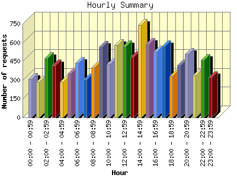
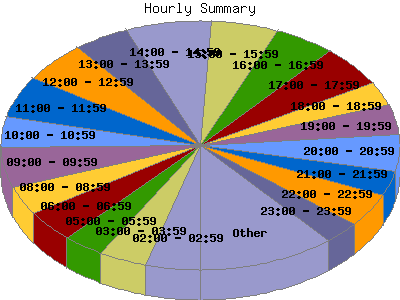

Report generated by Analog 6.0 and Report Magic 2.21
|
Web Server Statistics for "Harish Narayanan (hnarayan) - December 2006" Report generated by Analog 6.0 and Report Magic 2.21 |
The Hourly Summary identifies the level of activity broken down by each hour. Remember that one page hit can result in several server requests as the images for each page are loaded. This summary also compares the level of activity during working hours and after hours as a total for the report time frame.


| Hour | Number of requests | Number of bytes transferred | Percentage of the bytes | Percentage of the requests | |
|---|---|---|---|---|---|
| 1. | 00:00 - 00:59 | 308 | 24.462 MB | 1.97% | 2.88% |
| 2. | 01:00 - 01:59 | 286 | 28.911 MB | 2.32% | 2.67% |
| 3. | 02:00 - 02:59 | 473 | 15.722 MB | 1.26% | 4.42% |
| 4. | 03:00 - 03:59 | 416 | 22.151 MB | 1.78% | 3.89% |
| 5. | 04:00 - 04:59 | 286 | 17.897 MB | 1.44% | 2.67% |
| 6. | 05:00 - 05:59 | 351 | 26.417 MB | 2.12% | 3.28% |
| 7. | 06:00 - 06:59 | 439 | 38.077 MB | 3.06% | 4.11% |
| 8. | 07:00 - 07:59 | 303 | 17.706 MB | 1.42% | 2.83% |
| 9. | 08:00 - 08:59 | 398 | 45.099 MB | 3.62% | 3.72% |
| 10. | 09:00 - 09:59 | 564 | 47.376 MB | 3.81% | 5.28% |
| 11. | 10:00 - 10:59 | 428 | 23.494 MB | 1.89% | 4.00% |
| 12. | 11:00 - 11:59 | 577 | 146.597 MB | 11.79% | 5.40% |
| 13. | 12:00 - 12:59 | 568 | 42.656 MB | 3.43% | 5.31% |
| 14. | 13:00 - 13:59 | 485 | 44.825 MB | 3.60% | 4.54% |
| 15. | 14:00 - 14:59 | 742 | 146.954 MB | 11.81% | 6.94% |
| 16. | 15:00 - 15:59 | 588 | 126.953 MB | 10.21% | 5.50% |
| 17. | 16:00 - 16:59 | 526 | 86.164 MB | 6.93% | 4.92% |
| 18. | 17:00 - 17:59 | 570 | 23.398 MB | 1.88% | 5.33% |
| 19. | 18:00 - 18:59 | 334 | 12.871 MB | 1.03% | 3.12% |
| 20. | 19:00 - 19:59 | 418 | 20.045 MB | 1.61% | 3.91% |
| 21. | 20:00 - 20:59 | 508 | 161.345 MB | 12.97% | 4.75% |
| 22. | 21:00 - 21:59 | 339 | 33.418 MB | 2.69% | 3.17% |
| 23. | 22:00 - 22:59 | 462 | 59.190 MB | 4.76% | 4.32% |
| 24. | 23:00 - 23:59 | 321 | 32.235 MB | 2.59% | 3.00% |
| Work Hours (8:00am-4:59pm) | 4,876 | 710.120 MB | 57.09% | 45.61% | |
| After Hours (5:00pm-7:59am) | 5,814 | 533.847 MB | 42.91% | 54.39% | |
This report was generated on January 4, 2007 13:06.
Report time frame December 1, 2006 00:13 to December 31, 2006 23:54.
| Web statistics report produced by: | |
 Analog 6.0 Analog 6.0 |  Report Magic 2.21 Report Magic 2.21 |